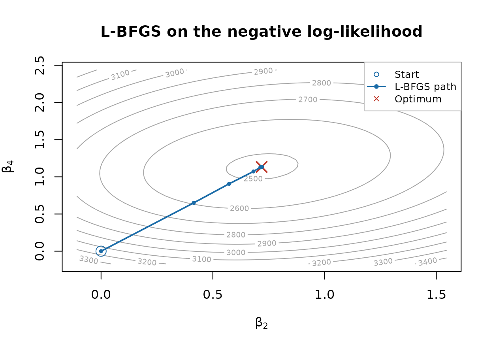

Watching an Optimizer Run with Callbacks
James Joseph Balamuta
Source:vignettes/watching-an-optimizer.Rmd
watching-an-optimizer.RmdAbstract
ensmallen reports on a run in progress through
callbacks, objects handed to Optimize() and called at
fixed points inside the optimizer’s loop. In this vignette we
follow a mini-batch fit with the built-in callbacks, write one
that records every point L-BFGS visits, and draw the recorded path
over a contour of the surface it descends.
Overview
Optimize() returns the coefficients it arrived at and
says nothing about how it got there. A run that stopped short of the
optimum and a run that converged look the same from the outside, as do a
step size that is too small and one that is too large. Callbacks
are ensmallen’s answer, objects passed as trailing
arguments to Optimize() and called at fixed points inside
the loop, where they can print what they are handed or keep it.
The objective throughout is the logistic regression negative log-likelihood built in the logistic regression vignette, and the functions called here are the ones that vignette produces. The data and the reference fit are regenerated below, so nothing here depends on that document having been run.
The reference fit
The simulation is the one from the logistic regression vignette, unchanged.
set.seed(42)
n <- 5000
beta <- c(-1, 0.7, -0.5, 1.2)
p <- length(beta)
# Design matrix with an intercept column
X <- cbind(1, matrix(rnorm(n * (p - 1)), ncol = p - 1))
# Bernoulli responses with the logistic link
y <- rbinom(n, size = 1, prob = 1 / (1 + exp(-(X %*% beta))))The full-batch L-BFGS fit is the reference every run below is
measured against, and glm.fit() confirms it
independently:
Built-in callbacks
logistic_reg_adam() takes a verbose
argument, and its whole effect is to add one callback to the
Optimize() call:
// Callbacks are passed as trailing arguments to Optimize(). PrintLoss
// writes to arma::get_cout_stream(), which RcppArmadillo maps to
// Rcpp::Rcout, so the output is safe to emit from an R package.
if (verbose) {
optimizer.Optimize(lrf, beta, ens::PrintLoss());
} else {
optimizer.Optimize(lrf, beta);
}ens::PrintLoss
prints the mean negative log-likelihood per observation once per pass
over the data:
set.seed(2024)
fit5 <- logistic_reg_adam(X, y, max_epochs = 5, verbose = TRUE)
#> 0.646261
#> 0.581345
#> 0.546041
#> 0.526306
#> 0.514921
max(abs(as.vector(fit5) - mle))
#> [1] 0.3811319A model that predicts one half for everything scores , so that is where the optimizer sets out from. The callback reports at the end of each pass, so the first number printed is already below it.
Printing does not replace the return value. The number after the
losses is fit5 measured against the maximum likelihood
estimate. Running the same step size to the default fifty epochs lands
somewhere else entirely:
set.seed(2024)
fit50 <- logistic_reg_adam(X, y)
max(abs(as.vector(fit50) - mle))
#> [1] 0.005593211The two deviations differ by more than an order of magnitude. The printed losses are still falling when the five-epoch run ends, so it stops short of the optimum.
ens::PrintLoss writes to
arma::get_cout_stream(), which RcppArmadillo
defines as Rcpp::Rcout rather than std::cout,
so the losses go out on R’s own connection, where they respect
sink() and avoid the R CMD check warnings
std::cout would draw.
Three others come up regularly:
-
ens::StoreBestCoordinates<>()keeps the best parameters seen, which matters for stochastic optimizers that wander away from a good point. -
ens::EarlyStopAtMinLoss()stops once the objective stops improving. -
ens::ProgressBar()reports progress on long runs.
The full set of built-in callbacks is longer than this, and the same trailing-argument syntax accepts any number of them at once.
Writing a callback
The callbacks above print. One of your own can keep what it sees instead, which is how the coordinates L-BFGS passes through become available in R.
ensmallen does not ask a callback to inherit from a base
class. It inspects the type it is handed and calls the hooks that type
defines, so a callback implements only the hooks it needs. The hook that
records a path is
StepTaken(optimizer, function, coordinates), called once
after the optimizer accepts a step, with coordinates
holding the point that step arrived at. Two more hooks bracket the run:
BeginOptimization() before the first step and
EndOptimization() after the last, each receiving the
coordinates as they stand at that moment. A hook may return
void or bool. Returning true from
one of the hooks called inside the loop, StepTaken() among
them, ends the run. That is how ens::EarlyStopAtMinLoss()
stops early.
The recorder appends what it is handed to a matrix the caller owns, one column per point:
// Records the coordinates the optimizer passes through.
class PathRecorder
{
public:
// The matrix to fill has one row per coefficient and no columns yet.
explicit PathRecorder(arma::mat& path) : path(path) { }
// Called once before the first step, with the starting coordinates.
template<typename OptimizerType, typename FunctionType, typename MatType>
void BeginOptimization(OptimizerType& /* optimizer */,
FunctionType& /* function */,
MatType& coordinates)
{
Record(coordinates);
}
// Called after every accepted step, with the coordinates it reached.
template<typename OptimizerType, typename FunctionType, typename MatType>
void StepTaken(OptimizerType& /* optimizer */,
FunctionType& /* function */,
const MatType& coordinates)
{
Record(coordinates);
}
// Called once the loop ends, with the coordinates being returned.
template<typename OptimizerType, typename FunctionType, typename MatType>
void EndOptimization(OptimizerType& /* optimizer */,
FunctionType& /* function */,
MatType& coordinates)
{
Record(coordinates);
}
private:
// Append one more column, unless it repeats the column already there.
void Record(const arma::mat& coordinates)
{
const arma::vec point = arma::vectorise(coordinates);
if (path.n_cols > 0 &&
arma::all(path.col(path.n_cols - 1) == point))
{
return;
}
path.insert_cols(path.n_cols, point);
}
// The accumulated path, owned by the caller.
arma::mat& path;
};The hooks are templates because the optimizer type, the objective type, and the matrix type are fixed by the call site rather than by the callback. The two parameters each hook ignores are left unnamed, which keeps unused-parameter warnings from firing.
StepTaken() takes its coordinates by const
reference and the other two do not, a difference the class has to
reproduce exactly. ensmallen matches each hook against a
signature declared in callbacks/traits.hpp, and one whose
qualifiers differ is not recognized. Adding const to
BeginOptimization() compiles cleanly and leaves the hook
uncalled, so the mistake arrives as a missing column rather than a
compiler error.
EndOptimization() is there because L-BFGS runs its
convergence tests between taking a step and calling
StepTaken(). A run stopping on the last of those tests
never reports its final step, so the returned coordinates are recorded
there instead. When the loop exits at the top of an iteration
StepTaken() has already seen them and Record()
drops the repeat. Without the hook the last column comes back a step
short and matches the fit only to the convergence tolerance.
The exported function pairs the recorder with the objective class
from the logistic
regression vignette and the same starting point
logistic_reg_lbfgs() uses:
// [[Rcpp::export]]
arma::mat logistic_reg_lbfgs_path(const arma::mat& X, const arma::vec& y,
const double lambda = 0.0) {
LogisticRegressionFunction lrf(X, y, lambda);
ens::L_BFGS lbfgs;
// The same zero start logistic_reg_lbfgs() uses, so the two runs agree.
arma::mat beta(X.n_cols, 1, arma::fill::zeros);
// One row per coefficient and no columns yet, for the recorder to fill.
arma::mat path(X.n_cols, 0);
lbfgs.Optimize(lrf, beta, PathRecorder(path));
return path;
}The recorder takes the position ens::PrintLoss()
occupies above, handed over as a temporary that writes into
path, which is declared beside it and outlives the call. A
callback keeping its result inside itself, such as
ens::StoreBestCoordinates<>, has to be a named object
read after Optimize() returns.
The package compiles the two blocks above into
logistic_reg_lbfgs_path() from
src/example-logistic-regression-path.cpp. That file carries
its own copy of the helpers and of the objective class inside an
anonymous namespace { }, since the L-BFGS file already
defines a class of that name at namespace scope. All three functions
also live together in one standalone file:
system.file("examples", "logistic-regression.cpp", package = "RcppEnsmallen")Recording an L-BFGS path
For a run of steps the result is a matrix whose first column is the vector of zeros the optimizer starts from and whose remaining columns hold the coefficients after each accepted step.
path <- logistic_reg_lbfgs_path(X, y)
dim(path)
#> [1] 4 10
# The last column is the fit logistic_reg_lbfgs() returned earlier.
max(abs(path[, ncol(path)] - mle))
#> [1] 0Holding the first and third coefficients at their fitted values and
varying the second and fourth over a grid gives a two-dimensional slice
of the objective, which contour() turns into level sets.
The window is wide enough to hold every recorded point, so the start at
the origin is in frame.
# Numerically stable softplus, the R counterpart of the C++ helper.
softplus <- function(e) pmax(e, 0) + log1p(exp(-abs(e)))
# Beta1 and Beta3 stay at their fitted values, so only Beta2 and Beta4 vary.
base <- X[, 1] * mle[1] + X[, 3] * mle[3]
# Grid limits: centered on the optimum, wide enough to hold the whole path.
r2 <- 1.15 * max(abs(path[2, ] - mle[2]))
r4 <- 1.15 * max(abs(path[4, ] - mle[4]))
g2 <- seq(mle[2] - r2, mle[2] + r2, length.out = 55)
g4 <- seq(mle[4] - r4, mle[4] + r4, length.out = 55)
# The negative log-likelihood at every point of the grid.
Z <- outer(g2, g4, Vectorize(function(b2, b4) {
eta <- base + X[, 2] * b2 + X[, 4] * b4
sum(softplus(eta) - y * eta)
}))
contour(g2, g4, Z, nlevels = 14, col = "grey65", labcex = 0.6,
xlab = expression(beta[2]), ylab = expression(beta[4]),
main = "L-BFGS on the negative log-likelihood")
# The optimum goes down first so the last few steps, which land on top of it,
# stay visible.
points(mle[2], mle[4], col = "#c0392b", pch = 4, cex = 1.8, lwd = 2)
lines(path[2, ], path[4, ], col = "#1b6ca8", lwd = 2)
points(path[2, ], path[4, ], col = "#1b6ca8", pch = 16, cex = 0.7)
points(path[2, 1], path[4, 1], col = "#1b6ca8", pch = 1, cex = 1.8)
legend("topright", bg = "white", box.col = "grey80", cex = 0.8,
legend = c("Start", "L-BFGS path", "Optimum"),
col = c("#1b6ca8", "#1b6ca8", "#c0392b"),
pch = c(1, 16, 4), lty = c(NA, 1, NA))
The level sets are closed curves nested around one interior minimum. Restricting a convex function to two of its arguments leaves a convex function, so the slice inherits the single basin of the full surface. That is the shape the logistic regression vignette relies on when it starts from a vector of zeros.
The path runs through all coefficients and the plot draws two, so points close together here can be further apart in the coordinates not shown. The surface also fixes the first and third coefficients at their fitted values, which the early iterates had not reached. The contour under a point is therefore not the objective value the optimizer saw there.
The first step covers most of the distance and the later ones crowd
together around the optimum. L-BFGS stops once the objective stops
improving rather than after a fixed number of iterations, which is why
dim(path) reports around a dozen columns instead of
hundreds.